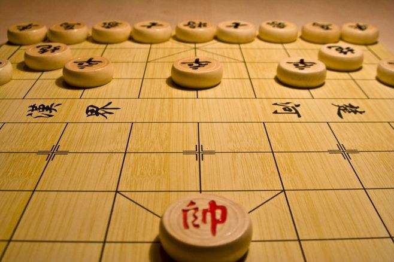

最大的业余爱好——象棋

我最大的爱好就是下象棋。说起这个爱好，要从小学四年级讲起。当时的我第一次接触象棋，对此并不熟悉，所以下的很烂——嗯，现在下的也很烂。在学校里，没有太多有趣的事物，而象棋却给当时的我带来了巨大的吸引力——因为它的变化有许多，胜败可能只在一念之间，这种感觉是我以前从未体会到的。因为这个爱好，甚至于在高中的时候受到了老师的批评——被抓住下棋了，老师认为不应当在学校下棋。当然，这并没有减少我对于下象棋这件事情的热爱，甚至更加深了对这件事情的热爱程度——或许是因为逆反心理吧。到了大学以后，我甚至加入了学校的棋社——当然，仅仅是加入了......相信在以后的闲暇时光里，象棋仍然是我娱乐的第一选择。因为它就像我儿时的伙伴一般，一直陪伴着我直到长大、直到现在、直到永远。
最大的特点——思考
最大的爱好——读书
最喜爱的历史人物——亚伯拉罕·林肯